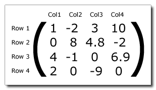

Una matriz es una colección de números dispuestos en un número fijo de filas y columnas. Por lo general, los números son números reales, pero no siempre tiene que ser así. La siguiente imagen muestra en general cómo se construye una matriz con cuatro filas y cuatro columnas: 
La fila superior es la fila 1, la columna más a la izquierda es la columna 1, y esta matriz es una matriz 4x4 porque tiene cuatro filas y cuatro columnas (se pueden construir matrices de otros tamaños). Al describir matrices, el formato es siempre filas / columnas, y cada número que conforma una matriz se denomina elemento de la matriz. Los elementos en una matriz tienen ubicaciones específicas, descritas por su posición de fila y columna donde la esquina superior izquierda de la matriz es la fila 1 columna 1. En el ejemplo de la matriz anterior, el elemento en la fila 1 col 1 es el valor "1". El elemento en la fila 2 columna 3 es el valor "4.8".
Las matrices son muy importantes para muchas cosas, pero se usan más para tratar el espacio 3D, por ejemplo, se pueden usar para configurar la vista de la cámara o para traducir o transformar un modelo. Las siguientes funciones existen para tratar con matrices en GameMaker Studio 2:
- matrix_get
- matrix_set
- matrix_build
- matrix_multiply
- matrix_build_identity
- matrix_build_lookat
- matrix_build_projection_ortho
- matrix_build_projection_perspective
- matrix_build_projection_perspective_fov
- matrix_transform_vertex
- matrix_stack_is_empty
- matrix_stack_clear
- matrix_stack_set
- matrix_stack_push
- matrix_stack_pop
- matrix_stack_top
- is_matrix